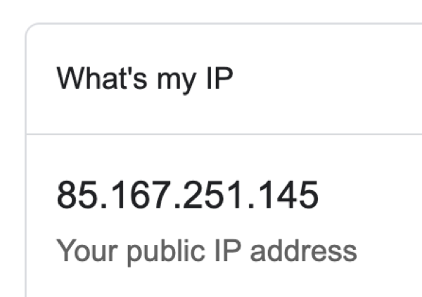
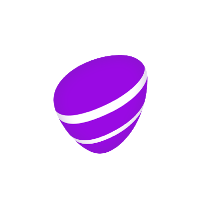
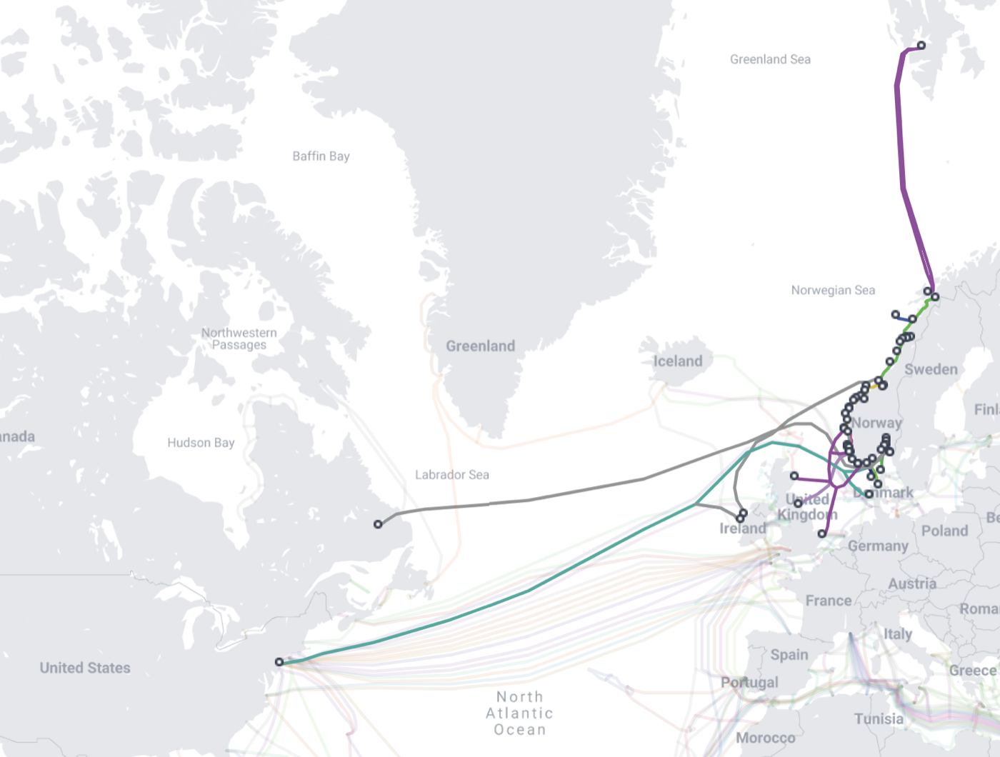
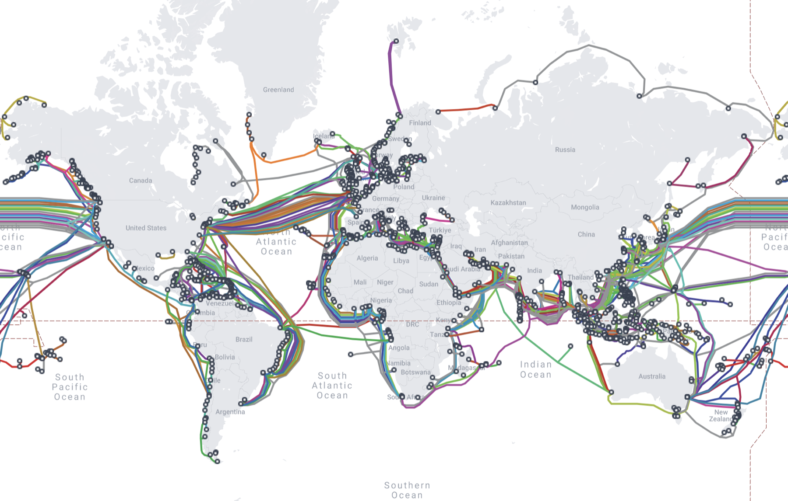
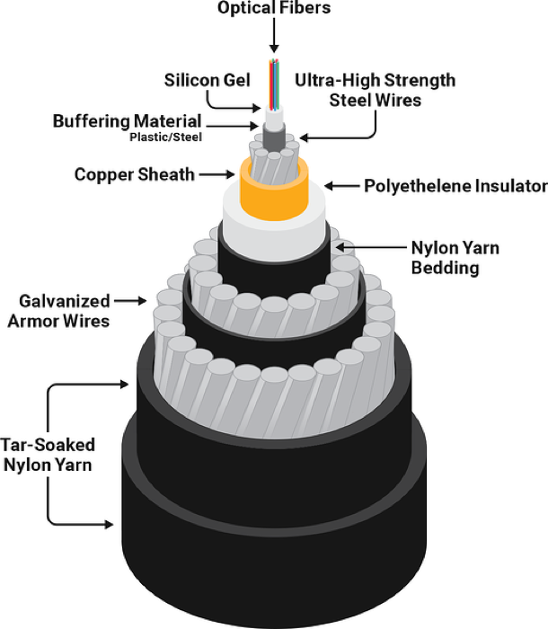
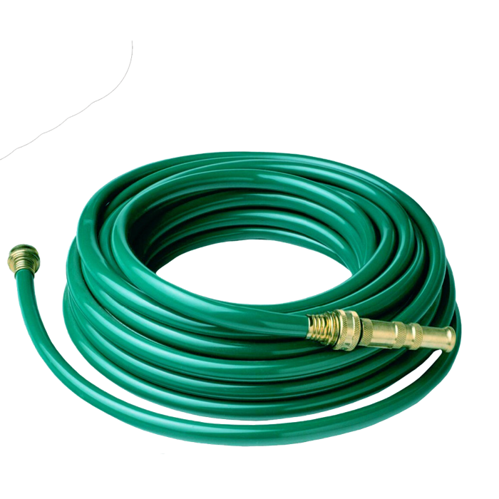

Alle enheter som er koblet til internett, har en IP-adresse

Nå vet vi at det er Hund som eier «youtube.com»
…og vi vet IP-adressen deres!
Men hva nå? Hvordan kommer forespørselen vår fram?
Rutere!
Internettets postkontor
Rutere
Supert! Nå kan vi sende meldinger 🙂
I virkeligheten:
Mange flere rutere
Mye lengre avstander!
Vi kan faktisk se ruterne:
$ traceroute youtube.com
1 home (192.168.10.1) 3.102 ms
2 190.79-160-116.customer.lyse.net (79.160.116.190) 3.964 ms
3 83.213-167-114.customer.lyse.net (213.167.114.83) 12.117 ms
4 lcarnb-ah-in-f14.1e100.net (142.251.142.238) 15.718 ms
🏠 ruteren hjemme→ Lyse (Altibox), internettleverandøren→ Google
Bare 4 hopp og 15 ms!
Hvorfor er YouTube så nærme?
Samlingspunktet for internett i Norge

BIX Universitetet i Bergen
TRDIX Prinsens gate, Trondheim
OS-IX Hans Møller Gasmanns vei, Oslo
IX = Internet Exchange, og B, TRD og OS er byene
Hvordan kommer vi oss ut av Norge?
Hvor går pakkene til Tokyo?
$ traceroute www.u-tokyo.ac.jp
1 home (192.168.10.1) 2.716 ms
2 190.79-160-116.customer.lyse.net (79.160.116.190) 4.327 ms
3 15.213-167-114.customer.lyse.net (213.167.114.15) 5.895 ms
4 ae71.edge7.london1.level3.net (217.163.134.165) 18.002 ms
5 ae1.3501.edge1.osaka1.level3.net (4.69.215.90) 243.282 ms
6 8.245.34.46 (8.245.34.46) 288.749 ms
7 163.139.136.67 (163.139.136.67) 244.492 ms
8 202.79.80.158 (202.79.80.158) 306.308 ms
9 *
10 *
11 158.205.121.23 (158.205.121.23) 256.161 ms
London: 18 ms→ Osaka i Japan: 243 ms
Over 200 ms ekstra: pakken har reist gjennom kabler under havet
Transatlantiske undersjøiske kabler
For de virkelig lange avstandene
Transatlantiske undersjøiske kabler

Undersjøiske kabler

Hvor tykk tror du en sånn kabel er?


Internett er et stort fagfelt
Hvordan sender man egentlig informasjon over en kabel?
Hvordan snakker to enheter sammen når det er mye data?
Hva skjer når man går tom for IP-adresser?
Hvordan funker wifi eller mobildata?
Og mange flere spørsmål!
Hvor mange IP-adresser finnes det?
129.241.160.102
256 × 256 × 256 × 256
= 4 294 967 296
Vi er over 8 milliarder mennesker…
…og de fleste har mer enn én ting på nett 📱💻⌚📺
Adressene er brukt opp! 😱
Den sentrale potten var tom i 2011, og Europas pott i 2019
Så hvordan kan vi fortsatt koble på nye ting?
Løsning 1
Ikke alle trenger en adresse ute på internett
Hva skjer i nettverket ditt?
Fra hele internett ned til ditt eget hjem eller klasserom
Hva er egentlig et nettverk?
Nå kan du spørre nettverket ditt selv!
Windows: ⊞ Win, skriv cmd, Enter
Hvilken IP-adresse har jeg?
C:\> ipconfig
IP-adresse: din (private!) adresse
Nettverksmaske
Standard Gateway: ruteren din, døra ut
Sammenlign med «What's my IP» fra del 1: der står ruterens offentlige adresse
Men hvordan får Katt svar fra Hund da?
NAT: oversetteren i ruteren
Network Address Translation
Bonus med NAT
🏠 Hele hjemmet deler én offentlig adresse
🙈 Ingen utenfra kan starte en samtale med mobilen din direkte
NAT er ikke en brannmur, men det skjuler det som er inne i huset
Løsning 2
Lag lengre adresser!
IPv6 = Internet Protocol versjon 6
Den vi har sett hittil, er versjon 4 (IPv4)
IPv6 ser sånn ut:
2001:0db8:85a3::8a2e:0370:7334
Heksadesimalt: 0–9 og a–f. :: betyr «bare nuller her».
IPv4 mot IPv6
IPv4
129.241.160.102
32 bit
4,3 milliarder
IPv6
2001:db8:85a3::8a2e:370:7334
128 bit
340 sekstillioner
Begge brukes samtidig i dag
Hvor mye er 340 sekstillioner?
🏖️ Alle sandkornene på jorda: 7,5 trillioner
Gi hvert sandkorn et helt IPv4-internett: 4,3 milliarder adresser hver
Til sammen: 32 kvadrilliarder adresser (3,2 × 10²⁸)
Gjett: hvor mye er igjen av IPv6?
99,99999999 %
fortsatt ledig
Den brukte biten er under en timilliondel av en piksel bred
Vi kunne gjort det samme over 10 milliarder ganger 🤯
Men hvordan fikk Katt IP-adressen sin?
Ingen har tastet inn 192.168.1.10. Den kom av seg selv.
DHCP: adresse til utlån
Dynamic Host Configuration Protocol
Discover →
Offer →
Request →
Acknowledge
DORA
Kan jeg få en ny adresse?
C:\> ipconfig /release
C:\> ipconfig /renew
Gi tilbake lånet, og spør på nytt: DORA på kommando
Hva vet PC-en mer om nettverket?
C:\> ipconfig /all
DHCP Enabled, Lease Obtained: lånet fra DORA
DNS Servers: oteren!
Physical Address: hæ? 🤔
Tenk vanlig post igjen:
MAC-adresse
Media Access Control (ikke det samme som en Mac!)
00:1A:2B:3C:4D:5E
Sitter i nettverkskortet fra fabrikken
6 par med heksadesimale tall. Første halvdel forteller hvem som laget kortet.
IP
Hvor i verden?
Rutere sender videre etter IP
MAC
Hvilken boks på nettverket?
Svitsjer og wifi leverer etter MAC
ARP: hvem har denne adressen?
Address Resolution Protocol
Hva er MAC-adressen min?
C:\> getmac
Hvem har jeg spurt med ARP?
C:\> arp -a
Internet Address Physical Address Type
192.168.1.1 70-4f-57-12-a4-b0 dynamic
192.168.1.25 00-11-32-4f-9e-11 dynamic
192.168.1.255 ff-ff-ff-ff-ff-ff static
IP til venstre, MAC til høyre. Første linje er svaret ruteren ga Katt!
Men hva om du vil slippe noen inn?
Husk NAT: ingen utenfra kan starte en samtale med deg
🎮 Har du prøvd å lage en Minecraft-server for vennene dine?
«Open to LAN»: funker for alle i huset ✅ (Local Area Network)
Vennen hjemme hos seg selv: ❌
Connection timed out: no further information
Port forwarding
Sånn ser det ut i ruteren
⚙️ Port forwarding
Navn
Minecraft
Protokoll
TCP
Ekstern port
25565
Intern IP-adresse
192.168.1.10
Intern port
25565
Lagre
TCP = Transmission Control Protocol: pakkene kommer fram, og i riktig rekkefølge
Hva må til?
🔧 En regel i ruteren: port 25565 → 192.168.1.10
📌 PC-en må beholde samme IP-adresse (DHCP-reservasjon på MAC-adressen)
🔥 Brannmuren på PC-en må slippe Minecraft inn
🌍 Vennen kobler til den offentlige adressen din (whatsmyip)
Du åpner en dør inn til PC-en din. Lukk den når dere er ferdige.
Står Minecraft-serveren og venter?
C:\> netstat -ano
Proto Lokal adresse Fremmed adresse Tilstand PID
TCP 0.0.0.0:25565 0.0.0.0:0 LISTENING 7316
TCP 192.168.1.10:52412 142.250.74.110:443 ESTABLISHED 4512
TCP 192.168.1.10:52415 20.112.250.133:443 TIME_WAIT 0
UDP 0.0.0.0:5353 *:* 1220
-a alle · -n bare tall · -o prosess-ID (PID) · UDP = User Datagram Protocol
Hva gjør du når nettet ikke virker?
Rutere og DNS fra del 1, nå i terminalen
Svarer du?
C:\> ping google.com
Sender 4 små pakker og måler tiden tur–retur
C:\> ping 8.8.8.8 -t
-t: fortsett til du trykker Ctrl + C. Fint for å se om nettet er ustabilt.
Hvilke rutere går vi gjennom?
C:\> tracert nrk.no
1 1 ms 1 ms 1 ms 192.168.1.1
2 12 ms 10 ms 11 ms 10.84.0.1
3 14 ms 13 ms 15 ms ti0001a400-ae1.ti.no [139.115.6.1]
4 18 ms 17 ms 19 ms nrk-gw.nrk.no [160.68.200.1]
5 18 ms 18 ms 18 ms 160.68.205.231
Hver linje er én ruter. Tre tider, fordi den prøver tre ganger. * * * betyr at ruteren ikke svarer.